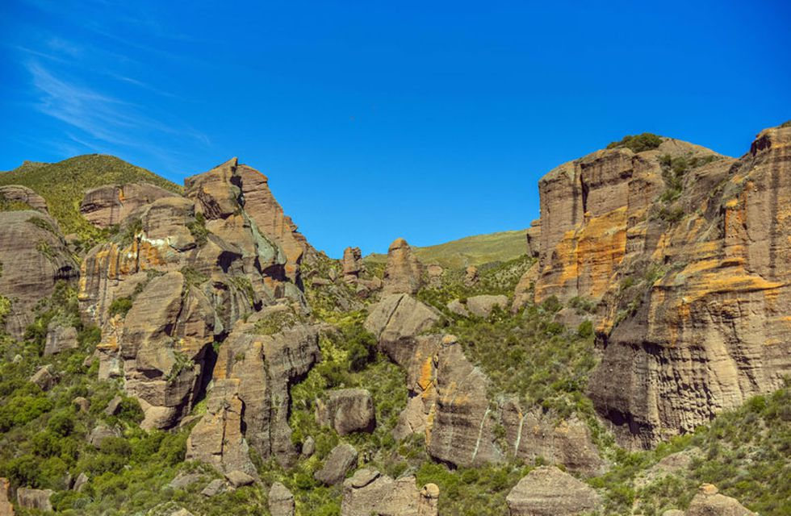

Novedades!
Últimas semanas

El Cerro Champaquí, con nieve y como nunca lo viste
Ocurrió en la última nevada en Córdoba cuando un grupo escalaba la montaña
con guías de turismo y fueron testigos privilegiados de una situación que pocas veces se ve.
Cuando casi estaba terminando el mes de septiembre, los cordobeses se vieron sorprendidos por una
ola de frío vinculada con nevadas registradas en las Sierras Grandes.
Uno de los sectores donde más nieve cayó fue en la zona del Champaquí. En ese cerro, el más alto de
Córdoba, se encontraba el experimentado guía de montaña Damián Gauna, liderando un grupo de
excursionistas de docentes y alumnos de la escuela N° 3007 de Figuera, Provincia de Santa Fe.
“Soy guía de montaña y hace unos días tuvimos una experiencia bastante particular digna de mostrar
al público. Junto con una escuela subimos al Champaquí en medio de la última nevada de septiembre.
Había 30 centímetros de nieve en gran parte del Cerro”, contó el profesional al diario La Voz.
Últimos meses
25 de septiembre
El paisaje milenario que podés descubrir en Córdoba
Los Terrones: una zona de formaciones rocosas y arenisca formada en la
prehistoria, que se puede conocer a pocos kilómetros de Capilla del Monte.
Si la Tierra pudiese hablar nos contaría historias increíbles de sus eras pasadas y los habitantes
que pisaron su suelo fértil. Aunque no tenga voz humana, deja el reflejo de sus milenios plasmados
en las formaciones que adornan su superficie. Los Terrones, en las cercanías de Capilla del Monte es
uno de esos lugares. ¿Lo conocés?
El Parque Autóctono Cultural y Recreativo Los Terrones, queda a las afueras de la localidad
capillense, en el Valle de Punilla, y a unos 115 kilómetros de la ciudad de Córdoba. El predio del
parque guarda cañadones profundos y paredones de piedra rojiza, atravesados por arroyos.
Abre todos los días, desde las 9:00 hasta las 18.30 horas, en horario de invierno.
18 de agosto

Los primeros copos de nieve del invierno cayeron en Los Gigantes
Se precipitaron en la zona de las sierras grandes. La temperatura en el lugar
es de 3 grados.
En la mañana de este sábado nevó en Los Gigantes, una zona de las sierras grandes de Córdoba. Hasta
el momento este es el único punto de la provincia en el que ocurrió el fenómeno más esperado del
invierno.
En diálogo con Carlos Paz Vivo! una vecina contó que amaneció “todo congelado” y que alrededor de
las 11 comenzaron a caer pequeños copos de nieve. También alertó que el acceso a la montaña para
realizar deporte está cerrado.
La temperatura en el lugar es de 3 grados. “No está tan frío”, aseguró otro hombre al mismo medio.
Cabe destacar que desde la madrugada de este sábado el camino de las Altas Cumbres permanece cortado
por el hielo que hay en la calzada. La Policía Caminera podría habilitarla nuevamente durante la
jornada.